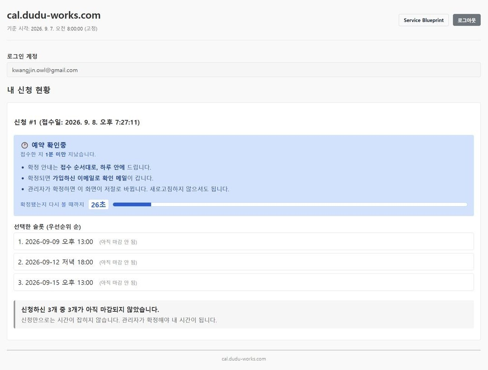
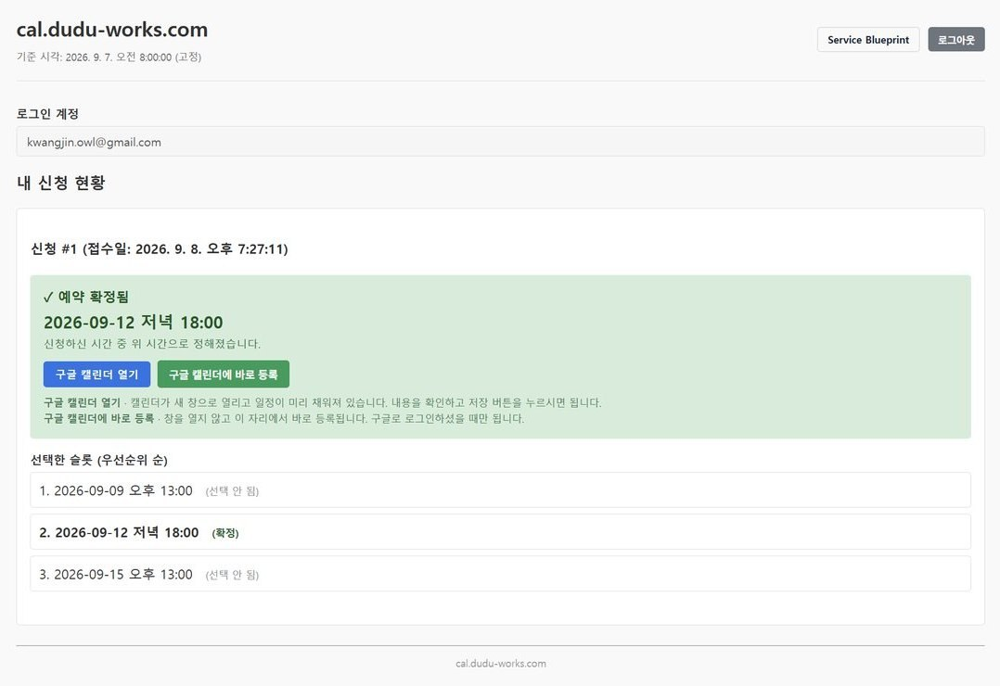
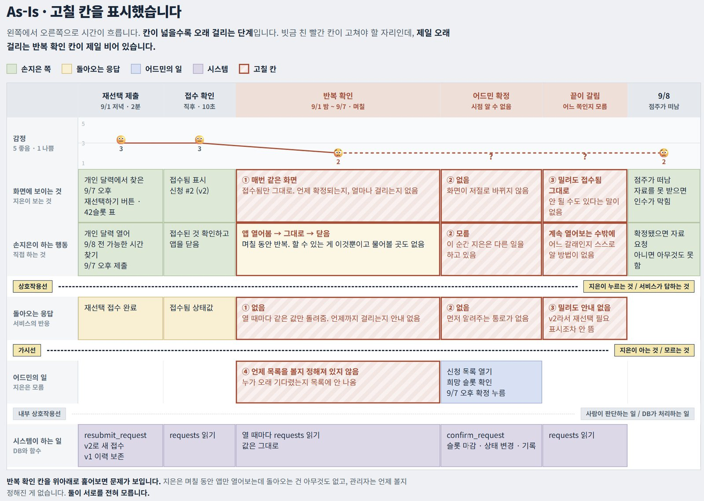
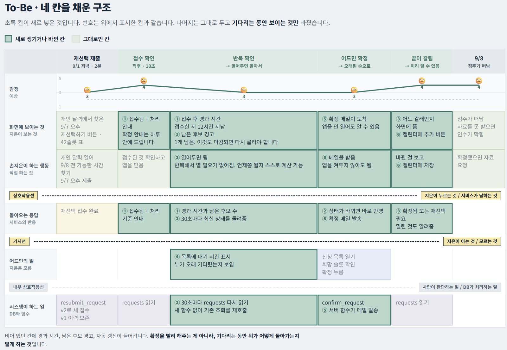
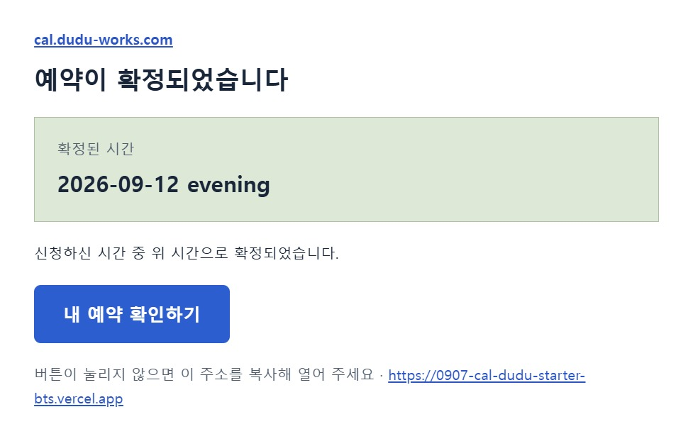

상담 예약 확정 대기 화면
고객이 희망 시간을 최대 세 개 신청하면 관리자가 하나를 확정하는 상담 예약 앱입니다. 수업에서 받은 이 앱은 규칙을 바꿀 수 없어서, 규칙은 그대로 두고 확정을 기다리는 고객 화면만 고쳤습니다.


- 구분
- 멀티캠퍼스 AI 프로덕트 매니저 트랙 · 미니 프로젝트
- 역할
- 강사가 준 예약 앱의 확정 대기 화면 기획·수정
- 기간
- 2026.09.07~08 (2일)
- 도구
- Supabase · Vercel · Resend · Google Calendar · Claude Code
- 결과
- 대기 화면에 신청 상태 3단계 안내 · 30초 자동 갱신 · 확정 메일과 캘린더 등록
어디를 고칠지부터 골랐습니다
먼저 고객이 신청부터 확정까지 겪는 과정을 단계별로 그려, 불편이 큰 곳 세 군데를 찾았습니다. 그중 언제 끝날지 알 수 없는 확정 대기를 골랐습니다. 그려 보니 가장 오래 걸리는 이 구간에서 고객에게 알려 주는 것이 가장 적었습니다. 고객 화면에는 "접수됨" 한 줄만 남아 있어서 할 수 있는 일은 앱을 열었다 닫는 것뿐이었고, 관리자도 누가 오래 기다리는지 알 수 없었습니다. 확정을 앞당길 수는 없으니, 기다리는 동안 무슨 일이 일어나는지 보여 주기로 했습니다.


다른 서비스는 어떻게 하는지 보았습니다
수업 자료에 있던 예약 서비스 17곳을 비교해 보니, 신청과 확정 사이에 대기 구간이 있는 곳은 6곳뿐이었습니다. 나머지 11곳은 신청하면 바로 확정되는 방식이었습니다. 6곳 중 OnceHub는 후보를 여러 개 내고 운영자가 하나를 승인하는 규칙이 이 앱과 같았습니다. 이곳을 포함해 세 곳의 방식을 가져왔습니다.
| 참고한 곳 | 그쪽이 하는 것 | 이 앱에 넣은 것 |
|---|---|---|
| 네이버 예약 | 신청 상태와 확정 상태에 이름을 따로 붙입니다 | "접수됨"을 예약 확인중 / 예약 확정됨 / 다시 선택해 주세요로 나눔 |
| SimplyBook.me | 승인되면 확인 메일이 간다고 미리 알려 줍니다 | 대기 화면에 "확정되면 가입하신 이메일로 확인 메일이 갑니다" |
| OnceHub | 운영자가 승인하기 전에는 시간을 잡지 않습니다 | "신청만으로는 시간이 잡히지 않습니다" 안내. 초록이 "내 자리가 잡혔다"로 읽혀 후보를 회색 (아직 마감 안 됨)으로 |

수강생끼리 서로 써 보는 테스트에서 나온 두 가지를 그날 고쳤습니다
대기 화면의 "다음 확인까지 27초"라는 문구를 보고, 수강생 두 명이 앱이 알아서 확정하는 줄 알았다고 했습니다. 그래서 "확정됐는지 다시 볼 때까지"로 바꾸고, "관리자가 확정하면 이 화면이 저절로 바뀝니다"를 덧붙여 누가 확정하는지가 문장에 들어가게 했습니다. 또 네 명은 구글 로그인을 할 수 없었습니다. 구글에 앱을 공개하려면 개인정보처리방침 같은 링크가 필요한데 없어서, 구글 없이도 이메일로 가입해 들어올 수 있게 했습니다.
받은 앱의 잘못은 고치지 않고 적어 두었습니다
받은 앱에는 고치면 안 되는 파일이 열네 개 있었고, 이틀 동안 하나도 건드리지 않았습니다. 그런데 받은 상태 그대로 돌린 자동 테스트 15개 중 3개가 실패했습니다. 확정 처리 코드에도 문제가 있었는데, 한 번 다시 고른 시간까지 다른 고객에게 확정되면 다시 고르라는 표시가 뜨지 않았습니다. 둘 다 받은 파일 자체의 문제라 고치지 않고 무엇이 문제인지만 기록했습니다.